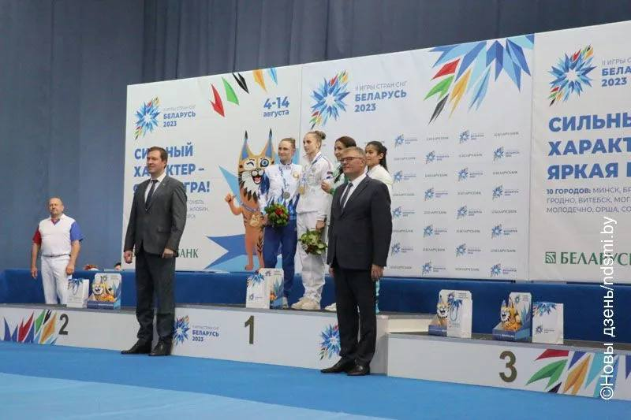

Десять стран на одном ковре
Август 2023 года. Беларусь принимает вторые Игры стран СНГ — двадцать видов спорта, двести сорок шесть комплектов медалей, десять городов. Жлобину досталось самбо. И он не подкачал.
Одиннадцать дней в стране кипел большой праздник спорта, а четыре из них — с 11 по 14 августа — принадлежали Жлобину. Во Дворце игровых видов спорта встретились более ста самбистов из десяти государств: Беларуси, России, Армении, Азербайджана, Казахстана, Узбекистана, Кыргызстана, Таджикистана, Туркменистана и Монголии. На ковре боролись действующие чемпионы мира и Европы — уровень, который в молодом городе видели впервые.
Первый день стал для хозяев сенсацией: все белорусские самбисты поднялись на пьедестал — четыре бронзы, два серебра и золото Анфисы Копаевой в категории до 50 кг. Российская команда увезла из Жлобина четырнадцать медалей — ровно по одной на каждого спортсмена. А фан-зона под открытым небом не пустовала даже под дождём: люди стояли с флагами всех десяти стран и кричали болельщикам на десятке языков.
Самая точная фраза турнира прозвучала от главного тренера сборной России: «В самбо нет места политике». На жлобинском ковре это было не лозунгом, а фактом: армянский и азербайджанский борцы жали друг другу руки, монгольские тренеры советовались с белорусскими, а маленькие болельщики просили автографы у спортсменов, чьи имена утром не знали.
Для Жлобина Игры стали пропуском в лигу городов, где проходят события continental уровня. И первым в этой лиге, конечно, стало самбо — потому что оно началось не с медалей, а с дружбы.